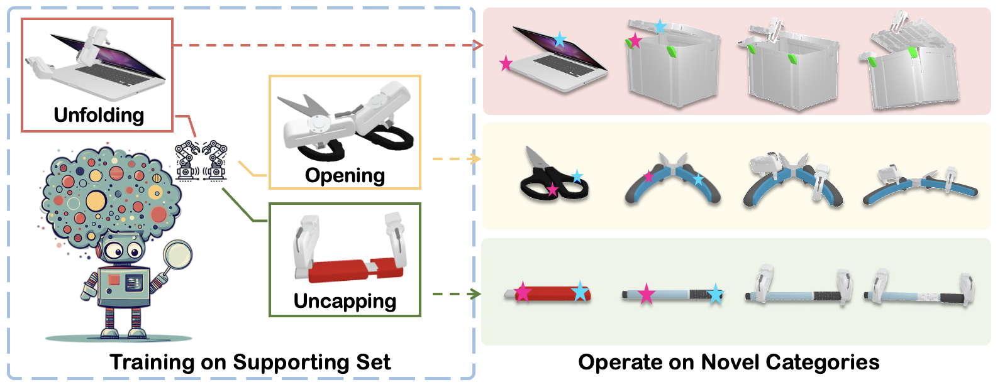

|
Jinxian Zhou | 周进贤 Hi👋, I am Jinxian Zhou. I received my Bachelor's degree in Mechanical Engineering at Shanghai Jiao Tong University(SJTU) this year. Currently, I work closely with Prof.Huazhe Xu at Shanghai Qi Zhi Institue. At SJTU, I have been an reserach intern of Machine Vision and Intelligence Group (MVIG), supervised by Prof.Cewu Lu and Prof.Lixin Yang. Last year, I was fortunately to be advised by Prof.Lin Shao at National University of Singapore(NUS).
I'm looking for a Ph.D position starting from 2026 Fall.🙏 |

|
🎉News
|
🎯ResearchI'm interested in robotics🤖 and computer vision 👀. |
|

|
Bi-Adapt: Few-shot Bimanual Adaptaion for Novel Categories of 3D Objects
via Semantic Correspondence
Jinxian Zhou, Ruihai Wu, Yiwei Liu, Yiwen Hou, Xunzhe Zhou, Checheng Yu, Licheng Zhong, Lin Shao ICRA 2026 International Conference on Robotics and Automation project page / arXiv / code We present Bi-Adapt, a novel framework designed for efficient learning of bimanual manipulation for novel categories. We propose this diffusion-model-based framework for generalizable bimanual manipulation across object categories for different complex tasks. We introduce a few-shot adaptation strategy following contact points selection to enhance bimanual collaboration efficiently. |
🚀Experience2025.07 - present

2024.06 - 2025.02

SJTU Machine Vision and Intelligence Group (MVIG), China Research Intern Research Advisor: Prof. Cewu Lu 2023.12 - 2025.06
Shanghai Jiaotong University(SJTU), China B.E. in Mechanical Engineering Zhiyuan Honors Program of Engineering 2021.09 - 2025.06
|
🏅Award
|
|
Website template taken from jonbarron. |